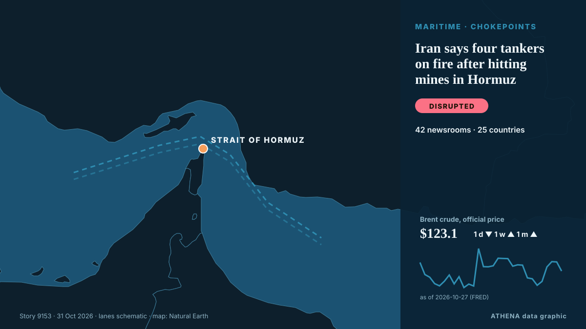

Maritime
Transport maritime et détroits aujourd'hui
Dernières 24 heures — événements : 43, pays : 47. Risque le plus élevé : 6.1 — Ukraine imposes new sanctions on Russia's Rassvet satellite system, 39 shadow fleet vessels.

Commerce et industrieIran says four tankers on fire after hitting mines in Hormuz
Coalition says it destroyed two ballistic missile launchers The Coalition has released footage it says shows the targeting and destruction of two ballistic missile launch platforms. de Gulf News
| 18 oct. | 4 |
|---|---|
| 19 oct. | 9 |
| 20 oct. | 14 |
| 21 oct. | 7 |
| 22 oct. | 18 |
| 23 oct. | 12 |
| 24 oct. | 11 |
| 25 oct. | 14 |
| 26 oct. | 13 |
| 27 oct. | 21 |
| 28 oct. | 13 |
| 29 oct. | 16 |
| 30 oct. | 18 |
| 31 oct. | 1 |
Bureau maritime : ports, routes et incidents →
Suivis
Dernières infos
Inside Tehran talks: Iranians link Houthi de-escalation to US approval of regional truce
A day after Saudi Arabia and its two defence-pact partners sent senior officials to Tehran, sources say the clearest outcome is a promise to keep talking, not a deal to de-escalate on any front… de The National
Saudi Arabia flight update: India-bound services resume from Riyadh, Indian Embassy says
The King Khalid International Airport (KKIA) in Riyadh reopened on Sunday, March 17, but continues to see over 60% percent of cancellations in its original scheduled flights.Accord... de Oman Observer
Egypt approves military support for Saudi Arabia after Houthi attacks escalate
Saudi Arabia is a major political, financial partner of Cairo, providing billions of dollars in aid, energy supplies. de Express Tribune
Iran says discussing plan with mediators to end war, reopen Hormuz
A Qatari delegation visited Tehran on Sunday for talks to review developments including the latest on negotiations, Hormuz and energy supplies. de Free Malaysia Today
Romania blames Russia for drone that sinks cargo ship; 1 killed, 3 missing
Romania’s rescue operation recovered nine people and one deceased body from a distressed ship in the Black Sea, while three remain missing. de Arab News
Saudi says Riyadh airport partly reopens despite renewed Houthi threats
Saudi Arabia said its main airport had partially resumed operations at two terminals on Sunday despite renewed threats to target it from Yemen’s Iran-aligned Houthis, as the kingdom intercepted… de Cyprus Mail
Yemen: 75 new recruits killed in Houthi missile strike laid to rest
A mass funeral was held Wednesday for 75 new recruits killed earlier this week in a Houthi missile strike in southern Yemen that was the deadliest attack since the resurgence of fighting in the Yemen… de Africanews (English)
Houthis strike Yemen's Aden airport after evacuation warning
ADEN/DUBAI, Oct 28 - Yemen's Houthis attacked Aden airport on Wednesday, government officials said, after the Iran-aligned group warned people to evacuate the facility as fighting escalated in the… de The Straits Times
Zelenskyy: Tankers carrying Russian diesel to US will not be targeted
Reuters said Russia has resumed diesel shipments to its major buyers following Trump’s diesel deal, with one tanker departing for Turkey on Oct. de Kyiv Post
Yemen's Houthis say they attacked Saudi Ras Tanura refinery, no Saudi confirmation
Yemen's Houthis claimed attacks on three Saudi oil facilities and two international airports. de The Jerusalem Post
Turkey's new deal on Mediterranean maritime boundaries with Libya is exacerbating issues with Greece and the EU
Turkey and Libya plan to redraw maritime boundaries in the Mediterranean as part of a new economic corridor. de DW English
Greek container ship sinks after drone attack off Bulgaria
A Greek container ship has sunk after being hit by naval drones off Bulgaria on Wednesday, the Bulgarian government said, in the latest of a series of strikes on ships in the western Black Sea this… de Cyprus Mail